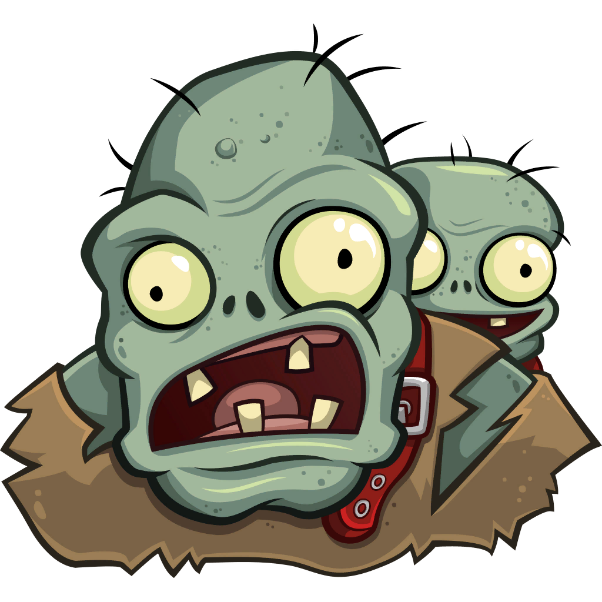

3 JEFES RANDOMS

SUPER FRIJOL
El frijol laser tiene la capacidad de disparar lasers por sus hojos, puede volar, teletransportarse y cuando esta debil es capas de lanzar un rayo gigante de sus ojos y boca

BARON VON BATS
Este zombi es muy peligroso y es capaz de muchas cosas... como por ejemplo la teletransportacion, invocar esbirros, disparar un laser de su cetro y puede regenerarse
ZOMBISTEIN
Este zombi es el mas grande de todos y tiene mucha fuerza, con su poderoso poste de luz puede acabar facilmente con todo aquel que se lo proponga